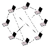

- Wygenerowano przez
 1.8.13
1.8.13
|  |
AAP File Transfer Protocol
1.0
Projekt na Techniki Intenetowe 2016Z. Wydział Elektroniki i Technik Informacyjnych Politechniki Warszawskiej.
|
| CCommandData | Zawartość ostatnio wpisanej przez użytkownika komendy |
| CDownMsg | Struktura reprzentująca wiadomość DOWN |
| CFileDownload | Klasa reprezentująca aktualnie pobierany w systemie plik |
| CFileFragment | Struktura przechowująca dane pojedynczego bloku pliku |
| CFileIDsStruct | Struktura będąca kontenerem zasobów sieciowych |
| CFileIDStruct | Struktura identyfikująca zasób sieciowy (nie lokalny) |
| CHost | Klasa reprezentująca hosta od którego można pobierać dane |
| CInterval | Truktura reprzentująca pojedynczy przedział numerów bloków z zapytania DOWN |
| ▼Cmutex | |
| Cmutex_wrapper | Struktura opakujaca std::mutex, pozwala na przechowywanie go w deque |
| CNetMsg | Klasa reprezentująca komunikat protokołu AAP |
| CResource | Struktura reprezentująca zasób posiadany przez klienta lokalnie |
| CResourceHeader | Struktura reprezentująca nagłówek komunikatu protokołu AAP |
| CResourceHeader::size_union | Rozmiar danych w postaci zmiennej C++ lub binarnej |
| CResourceHeader::time_union | Czas dodania zasobu w postaci zmiennej C++ lub binarnej |
| Cyy_buffer_state | |
| Cyy_trans_info | |
| Cyyalloc | |
| CYYSTYPE |
1.8.13